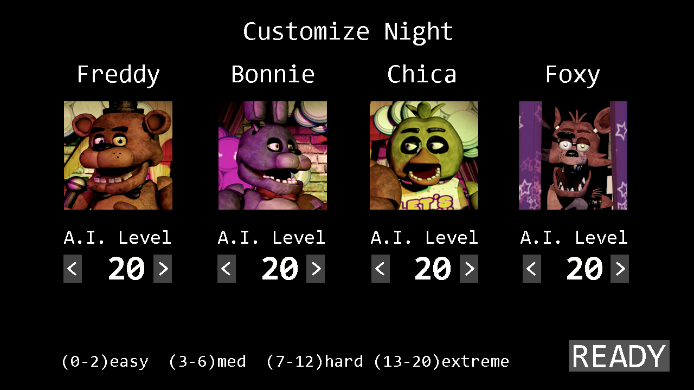

gameplay |
|
Движок
Fnaf — это игра в жанре survival horror с элементами point-and-click. Сделана она была на простеньком движке Clickteam Fusion 2.5, а для моделирования и визуализации 3D-графики Скотт использовал Autodesk 3Ds Max. Вот несколько примеров работы Скотта с персонажами в 3Ds Max Вся же анимация в игре сделана в виде гиф картинок (скримеры, вентилятор и т. д.) |
|
Геймплей Игрок управляет ночным охранником (Майком Шмидтом) и должен просидеть 5 ночей с полночи до шести утра. Одна игровая ночь длится 8 минут 36 секунд реального времени. Мы не можем ходить или всячески передвигаться, а лишь поворачиваться с помощью мышки вправо и влево. Из предметов взаимодействия есть только планшет с камерами видеонаблюдения и кнопки у двери: верхняя (красная) закрывает и открывает дверь, нижняя (белая) подсвечивает коридор за дверью. Открыв планшет, наведя курсором на прямоугольник в нижней части экрана, игроку открываются камеры, расположенные по всей пиццерии. Они дают полный обзор того, что происходит в заведении. Не работает лишь одна — камера 6, в которой находится кухня. Тут мы слышим только звуки без какого-либо видеоизображения. Но периодически сами аниматроники могут отключать на время камеры, что добавляет дополнительную сложность к прохождению. |
|
Главной же защитой от аниматроников являются двери. Достаточно просто закрыть дверь, когда маскот будет рядом, и дождаться его ухода.
Если же не успеть вовремя закрыть дверь, то на нас нападёт аниматронник в виде скримера. Скримеры и являются основными элементами пугалок в игре.
Казалось бы, можно просто закрыть все двери и досидеть до конца ночи. Но тут мы переходим ещё к одному ключевому моменту игры — электроэнергии.
В начале каждой ночи у игрока будет 99% энергии. И в течение ночи она будет тратиться. Насколько быстро — зависит от действий игрока.
В левом углу экрана есть счётчик энергии, состоящий из нескольких полос.
Каждое действие, будь это поднятие планшета, подсветка коридора или закрытие двери, добавляет одну полоску к счётчику.
Даже если мы ничего не будем делать, будет гореть одна полоса счётчика.
|
|
 |
Чем больше полосок, тем больше энергии в час мы тратим.
Одна полоса тратит 9% энергии в час, две — 18%, три — 27, и четыре уже 36.
Поэтому игроку выгодно как можно реже пользоваться дверьми. Если же энергия закончиться, весь свет в здании выключится,
а в проёме левой двери появится Фредди Фазбер, который начнёт играть «Марш Тореодора».
И когда закончится мелодия, он нападёт на нас скримером.
С первой по шестую ночь механика игры особо не меняется.
Отличия есть лишь на седьмую «Свою ночь». Перед началом этого уровня игрок сам может настроить поведение аниматроников,
их A.I. уровень. Настраивается он от 0 до 20. Где 0 — это совсем неактивен, а 20 — активен на полную катушку.
Вот все основные элементы геймплея игры. Давайте перейдём к основным антагонистам — аниматроникам. Ведь к каждому из них нужен свой подход. |